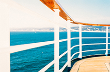
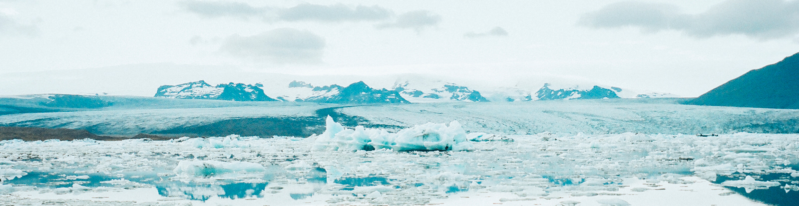

24
июля
 Повышение резкости, пожалуй, одна из самых избитых тем в интернете. Соревноваться с ней по популярности могут только бесчисленные способы превращения фотографии в черно-белую. Достаточно ввести в любой поисковой системе «повышение резкости», как вы сразу найдете детальное описание сотен методов и приемов, не говоря уж о множестве специализированных плагинов и отдельных программ. Как правило, при обработке портрета не требуется повышать резкость по всему изображению. Чтобы фотография казалась зрителю резкой, будет вполне достаточно, если резкими будут выглядеть ключевые детали. В подавляющем большинстве случаев достаточно сделать резкими только глаза (радужку и ресницы), чтобы даже самый мягкий портрет казался, как говорят, «звеняще резким». Реже требуется дополнительно повысить резкость на губах, украшениях, пуговицах на одежде и т.п.
 Сегодня мы расскажем о самом, пожалуй, любимом нами способе тонирования фотографий. Простом и эффектном. Начнем с того, что наилучший эффект, как правило, даёт тонирование не в один цвет, а как минимум в два. Такое раздельное тонирование позволяет выделить главный объект, «оторвать» его от фона, создать цветовой контраст. И всё это очень легко достигается описанным ниже методом.т.п. Сразу отмечу, что наилучший эффект мы сможем получить в случаях, когда основной объект на снимке заметно отличается от окружающего его фона по тону, то есть по яркости освещения. Классический случай — хорошо освещённая модель на тёмном фоне. На таких фотографиях описываемый метод позволяет создать между объектом и фоном так называемый «контраст тепло/холод», в котором многие фотографы и дизайнеры видят чуть ли не основной ключ к коммерческому успеху снимка.
Сегодня мы расскажем о самом, пожалуй, любимом нами способе тонирования фотографий. Простом и эффектном. Начнем с того, что наилучший эффект, как правило, даёт тонирование не в один цвет, а как минимум в два. Такое раздельное тонирование позволяет выделить главный объект, «оторвать» его от фона, создать цветовой контраст. И всё это очень легко достигается описанным ниже методом.т.п. Сразу отмечу, что наилучший эффект мы сможем получить в случаях, когда основной объект на снимке заметно отличается от окружающего его фона по тону, то есть по яркости освещения. Классический случай — хорошо освещённая модель на тёмном фоне. На таких фотографиях описываемый метод позволяет создать между объектом и фоном так называемый «контраст тепло/холод», в котором многие фотографы и дизайнеры видят чуть ли не основной ключ к коммерческому успеху снимка.
 Для эффективной обработки не обязательно полностью изучать функционал Lightroom, достаточно изучить основные инструменты обработки. В данной статье вы узнаете как быстро и красиво обработать фотографию в Adobe Lightroom с помощью трёх самых важных инструментов: экспозиция, кисть и тонирование.т.п. Давайте начнем работу с анализа фотографии. Явная проблема – большой перепад яркости из-за того, что часть лица в тени, а другая часть на солнце. Что нужно сделать? Всё просто – осветлить тёмные участки и затемнить светлые, достав оттуда потерянную в пересвете информацию.